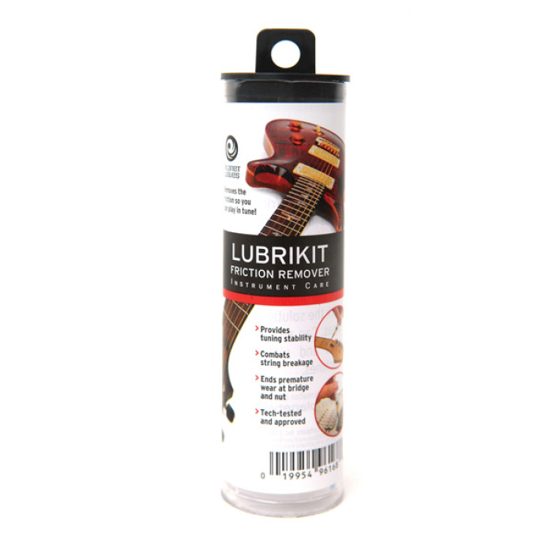
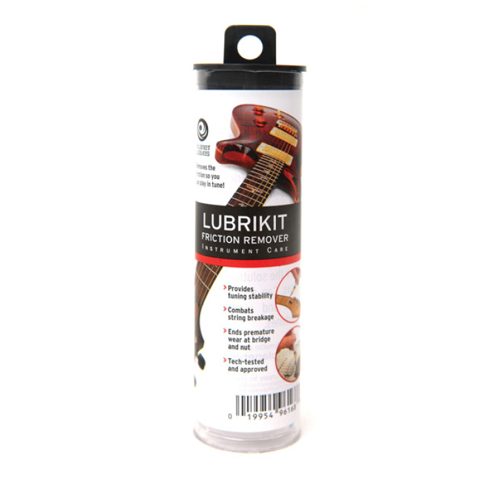

Многие, купив гитару, думают, что она всегда будет выглядеть и звучать так же, как в день покупки. Однако спустя некоторое время с удивлением обнаруживают, что на корпусе появились пятна, накладка грифа пошла буграми, порожки повылазили и больно «кусают» пальцы, а при зажатии струн слышен дребезг. Все эти неприятности могут настичь любой инструмент независимо от его стоимости, и вызваны они, прежде всего, отсутствием надлежащего ухода и неправильным хранением. Как же правильно хранить гитару и ухаживать за ней? Читайте далее.
Оптимальными для хранения гитары являются температура +10 – +25 °C и влажность 50–60 %. При этом инструмент необходимо оберегать от резких перепадов температур, сквозняков, прямых солнечных лучей и попадания воды. Кроме того, его нельзя размещать рядом с батареями, отопительными и охлаждающими приборами.

Кстати, о чехлах. Храните гитару в чехле либо кейсе вне зависимости от температуры и влажности в помещении. Это не только позволит поддерживать необходимый микроклимат, но и убережет инструмент от пыли, грязи и случайных ударов. Для дома можно приобрести летний тонкий чехол, а вот для походов на репетиции или занятия стоит выбрать всепогодный утепленный. Тем же, кто часто путешествует вместе с гитарой, лучше рассматривать пластиковые или деревянные кейсы – они позволят сдать инструмент в багаж, не беспокоясь о его сохранности.
Помните, что время от времени гитару стоит вынимать из чехла и проветривать. А зимой, зайдя в помещение с улицы, не спешите доставать инструмент – дайте ему постоять в чехле (кейсе) минут 30, чтобы акклиматизироваться. Это же правило действует и в обратном случае: перед выходом из дома зачехлите гитару и выставите минут на 15 на застекленный балкон. Эти действия уберегут ваш инструмент от резких перепадов температур и последующих нежелательных последствий.
Во время игры руки потеют, и вместе с потом на гитару попадают грязь, жиры, крем для рук и прочее далеко не полезные для инструмента вещества. Именно поэтому перед игрой руки необходимо тщательно вымыть (в идеале – обезжирить специальным спреем) и насухо вытереть. Впрочем даже при соблюдении гигиены время от времени гитаре необходима «генеральная уборка». Давайте разбираться, в чем она заключается.
Уход за корпусом включает в себя его чистку от загрязнений и, при необходимости, полировку, которая позволит не только убрать следы от пальцев, но и сгладить мелкие царапины. При выборе средств ухода важно учитывать, лакированный у вашей гитары корпус или нет.
Если корпус лакированный, для чистки используйте тряпочку из микрофибры или другого мягкого материала; если требуется, предварительно нанесите на нее спрей-полироль или специальную мазь. Также можно воспользоваться одноразовыми чистящими салфетками, которые очень удобно брать с собой. После обработки поверхности нужно подождать 5–10 минут, чтобы состав подействовал, а затем сухой чистой тряпочкой удалить его излишки.
Протирать корпус гитары стоит как можно чаще (в идеале – после каждой игры), а вот полировать достаточно раз в 2–3 месяца, а новые инструменты – даже реже.
И еще один важный момент. Большинство современных гитар покрываются полиуретановым лаком, который очень прочен и устойчив к воздействию полиролей. А вот старые винтажные инструменты обычно обработаны лаком нитроцеллюлозным – он очень тонкий и используется больше для уплотнения древесины, чем для ее защиты, а потому под действием полироли будет разрушаться. Такие инструменты необходимо чистить так же, как нелакированные, либо с применением средств, разработанных специально для ухода за нитроцеллюлозными лаковыми покрытиями.
Если корпус нелакированный. Нелакированный корпус ни в коем случае нельзя мочить и полировать – это может привести к появлению на поверхности безобразных пятен и порче инструмента. От пыли такой корпус можно очистить сухой мягкой тряпочкой, а от сильных загрязнений – специальной жидкостью, предназначенной для обработки нелакированных поверхностей.
 

Гриф – одна из самых загрязняемых частей гитары, поскольку пот и грязь с пальцев играющего оседает, прежде всего, именно на нем. Если задняя часть грифа чистится точно так же, как и весь корпус гитары, то за накладкой и ладовыми порожками необходим отдельный уход.
Самое большое количество грязи скапливается около ладовых порожков. Если регулярно не проводить чистку, то со временем они разрушатся под действием коррозии, и их придется менять. Аккуратно, стараясь не повредить накладку грифа, пройдитесь по ладовым порожкам абразивной мочалкой или мягкой зубной щеткой, продольными движениями разрушая структуру загрязнения. Тряпочкой уберите остатки загрязнений и при необходимости отполируйте порожки специальной мелкозернистой наждачкой.
После этого нанесите на накладку грифа специальный кондиционер или лимонное масло, дайте ему впитаться и уберите остатки сухой мягкой тряпочкой. Это поможет удалить загрязнения и увлажнит накладку, предотвратив ее высыхание и растрескивание. Обратите внимание, что лимонное масло хорошо подходит для накладок из темного дерева, например, палисандра, однако накладкам из светлого дерева типа клена оно противопоказано, поскольку может испортить структуру материала, – в этом случае лучше использовать специальные чистящие салфетки.
Чистить гриф необходимо хотя бы раз в полгода. Струны для удобства и чтобы на них не попали чистящие вещества, перед процедурой необходимо снять. Возвращать их на место можно только после того, как гриф полностью просохнет.